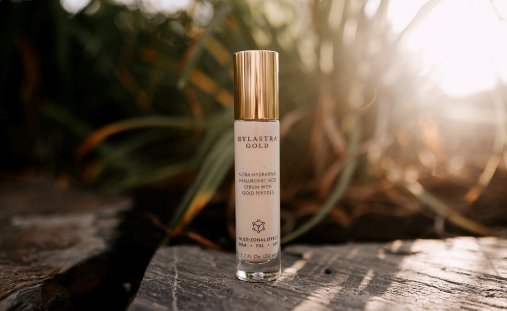
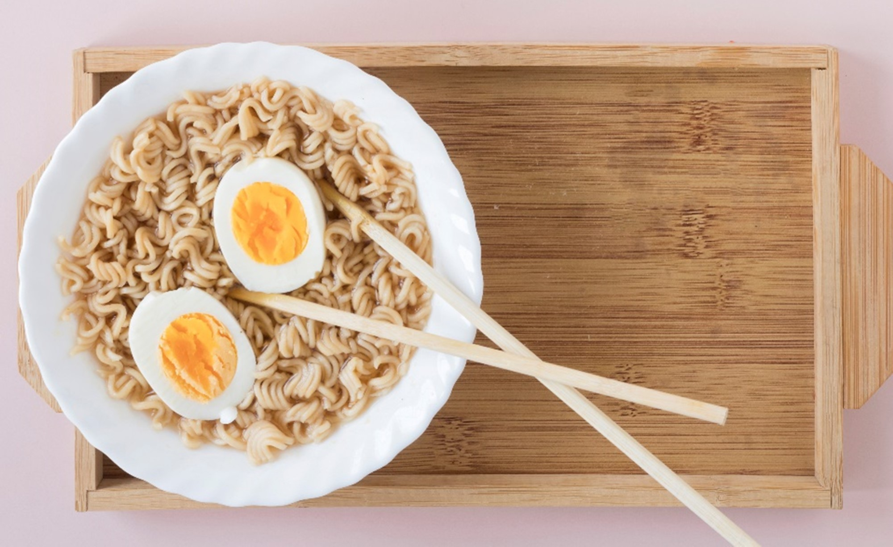

Consumer Analysis Articles
How can serum not even moisturize? SK-II Youth
Dew Evaluation is a concerni-Buzz VOC plus beauty industry word-of-mouth data found that "essence"
Sushi Lang, Kura sushi do well on campaign marketing
How do Sushi Express face the competition? With the sushi world in full swing, the biggest local rival is bound to face more
Dew Evaluation is a concern
i-Buzz VOC plus beauty industry word-of-mouth data found that "essence"
is the season-changing key maintenance products. What characteristics
do consumers careabout when buying essence?

Sushi Lang, Kura sushi do well on campaign marketing How do Sushi Express face the competition?
With the sushi world in full swing, the biggest local rival is bound to face more
intense competition than in the past.
"President, Vedan, and Wei Lih" won the
internet volume but lost the brand preference?The recent outbreak of pendemic set off a wave of domestic rush to buy,
The dehumidifier is running too loud! Panasonic
resonant noise issues need to be addressed
The i-Buzz VOC plus word-of-mouth database found that the dehumidifier
internet volume but lost the brand preference?
The recent outbreak of pendemic set off a wave of domestic rush to buy,
and instant noodles are one of the important rush targets.

The dehumidifier is running too loud! Panasonicresonant noise issues need to be addressed